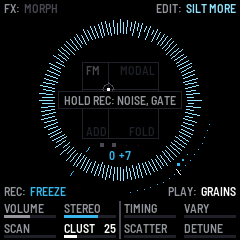
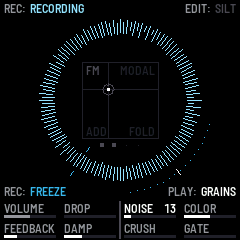

Manual
Two instruments, one audio memory. MORPH generates sound. SILT plays it back as grains. Both keep running when you switch modes.
Play in the browser · Install firmware
Quick start
- FX: raise MASTER, latch two or three notes, and turn KNOB1/2 to blend the synthesis engines.
- Wait two seconds. EDIT: switch to SILT. Tap REC once to freeze the memory.
- Tap PLAY for continuous grains, or tap keys to play them yourself.
- Explore POSITION, SIZE and DENSITY. Return to FX at any time.
MORPH
FX — sound generation

Four synthesis methods blend across the XY square. Up to four notes latch; tap a note again to release it.
| Knob | Control | Function |
|---|---|---|
| KNOB1 | X | Left ↔ right |
| KNOB2 | Y | Bottom ↔ top |
| KNOB3 | COMPLEX | Harmonic richness |
| KNOB4 | TONE | Dark ↔ bright low-pass |
| SELECT | SPREAD | Voice stereo width |
| ALGORITHM | MOVE | Automatic XY orbit |
| PRESETS | EXCITE | Modal ringing time |
Vector square
| Corner | Sound |
|---|---|
| Top left · FM | Frequency modulation |
| Top right · MODAL | Struck, decaying bells |
| Bottom left · ADD | Added harmonics |
| Bottom right · FOLD | Wavefolding |
The white dot is the current mix; the waveform surrounds it. The dotted orbit shows MOVE. Four pips below show voice positions in stereo.
SILT
EDIT — granular playback

Plays up to 16 grains from a 1.49-second circular recording of MORPH. Each grain has a position, duration, pitch and direction.
| Knob | Control | Function |
|---|---|---|
| KNOB1 | POSITION | Newest ↔ oldest audio |
| KNOB2 | SIZE | 20–500 ms |
| KNOB3 | DENSITY | 1–40 starts/sec |
| KNOB4 | SPRAY | Random start position |
| SELECT | PITCH | −24 to +24 semitones |
| ALGORITHM | REVERSE | Reverse probability |
| PRESETS | SHAPE | Struck → bell → swell |
Grain keys
Tap up to four pitches to latch them; tap again to release. A new key triggers grains immediately, even with PLAY off. C is the original pitch at the default octave. With no keys latched, grains use the PITCH offset alone. CLUSTER controls whether pitches play in turn or together.
The ring is recorded audio; the outer mark is POSITION and its dotted arc is SPRAY. Moving dots are grains: outside = forward, inside = reverse. Numbers below the square show latched pitch offsets.
SILT — extended controls
Hold EDIT to adjust variation between grains.

| Knob | Control | Function |
|---|---|---|
| KNOB1 | TIMING | Regular → irregular starts |
| KNOB2 | VARY | Random length, up to ¼–4× SIZE |
| KNOB3 | SCATTER | Random octave and interval jumps |
| KNOB4 | DETUNE | Up to ±50 cents per grain |
| SELECT | STEREO | Random stereo placement |
| ALGORITHM | CLUSTER | 1–4 simultaneous grains |
| PRESETS | SCAN | Automatic POSITION movement |
SHAPE at 0 is a fast attack, 50 a bell envelope, 100 a slow swell. CLUSTER at 0 cycles pitches one by one; higher values layer them.
Recording
Tap REC to cycle the recording mode. The ring's write head indicates its state.
| Mode | Write head | Behavior |
|---|---|---|
| LIVE | Moving tick | Replace oldest audio with MORPH |
| FREEZE | Two stationary marks | Keep the captured sound |
| OVERDUB | Two moving ticks | Layer new sound over memory |
| RESAMPLE | Tick + block | Record processed grains back in |
Hold REC to shape what gets recorded. Release after turning a knob to keep the current mode.

| Knob | Control | Function |
|---|---|---|
| KNOB1 | NOISE | Add hiss (even without notes) |
| KNOB2 | COLOR | Low rumble → bright hiss |
| KNOB3 | CRUSH | Reduce amplitude resolution |
| KNOB4 | GATE | Preserve memory below threshold |
| SELECT | DROP | Random recording gaps |
| ALGORITHM | DAMP | Darken recorded audio |
| PRESETS | FEEDBACK | Retention in overdub / resample |
These effects are written into the audio memory and can accumulate on each pass. FREEZE prevents changes to memory. A dim head means recording is gated or dropped; specks indicate noise. For clean capture, set NOISE, CRUSH and DROP to zero.
Shared controls
Hold SEL for the three shared knobs.
| Knob | Control | Function |
|---|---|---|
| KNOB1 | MIX | MORPH ↔ SILT balance |
| KNOB2 | FADE | MORPH note attack/release |
| PRESETS | LEVEL | Overall output level |
| Button | Action |
|---|---|
| MASTER | Output volume, always active |
| FX | MORPH knobs and note keys |
| EDIT | SILT knobs and pitch keys; hold for more |
| REC | Cycle recording; hold for recording controls |
| PLAY | Continuous grains on/off |
| OCT− / OCT+ | Shift keyboard octave; held pitches stay |
| HOME | Hold 1 s: release notes and stop grains; tap: version |
| SAVE | Not implemented |
The screen mirrors the physical knob layout. Its corner labels show the current mode; turning a knob shows its value (0–100). Held layers change the knobs, not the audio routing.
Patch ideas
Capture one or two notes and FREEZE before trying these. Values are displayed knob percentages unless stated otherwise.
| Patch | Settings |
|---|---|
| Chord cloud | C/G/C; CLUSTER 100, SHAPE 50, SIZE 70, DENSITY 40 |
| Plucked arp | 3–4 pitches; CLUSTER 0, TIMING 0, SHAPE 0, SIZE 30, DENSITY 60 |
| Shimmer | SCATTER 40, DETUNE 60, REVERSE 50, SIZE 70, STEREO 100 |
| Rain | TIMING 100, VARY 80, SIZE 20, SPRAY 100, DENSITY 80 |
| Hand-played | PLAY off; SHAPE 0, SIZE 60, CLUSTER 50; tap keys |
For a new texture, switch REC to RESAMPLE and let the grains rewrite their own source.
Notes
Experimental firmware. Simulator-tested, not yet validated on physical FM-1 hardware. Try the browser before installing. No MIDI input or saved patches; audio memory is volatile. New grains are skipped when all 16 slots are occupied. The installer can restore stock firmware or switch instruments without overwriting STRATA's saved sound.